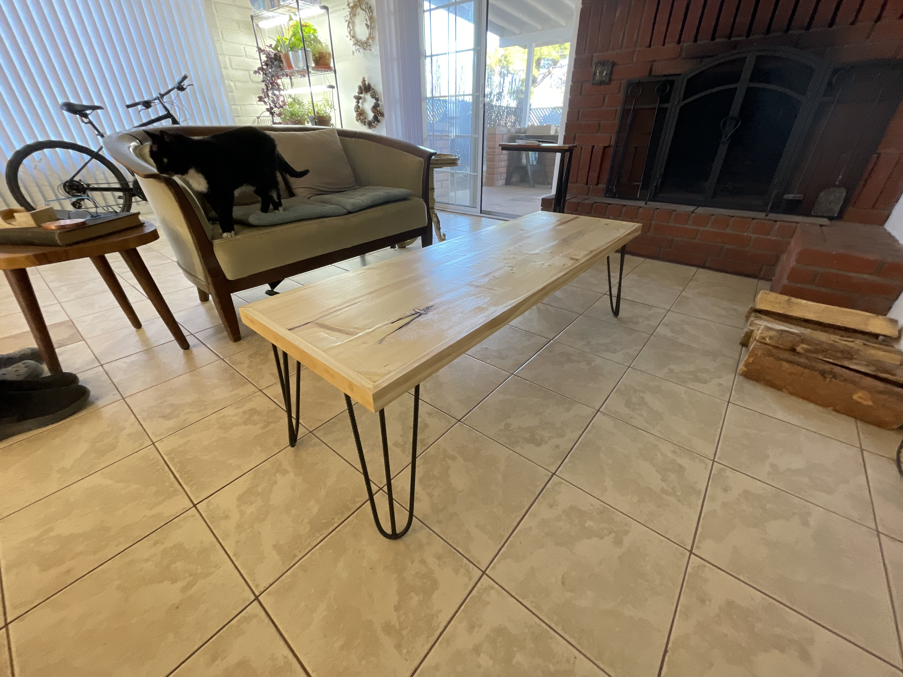
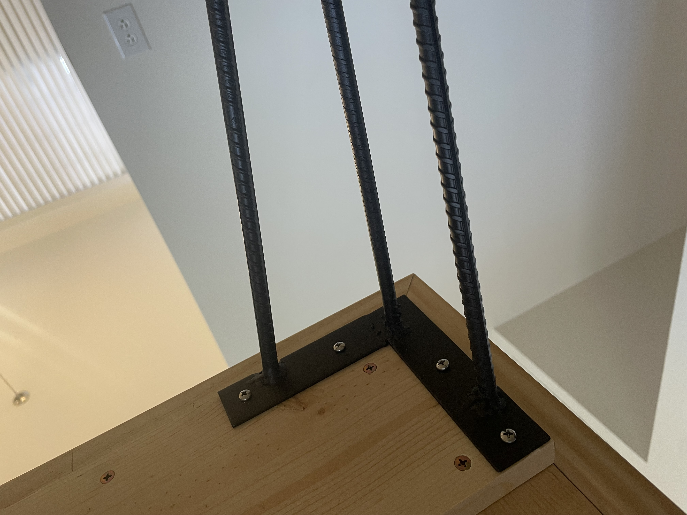
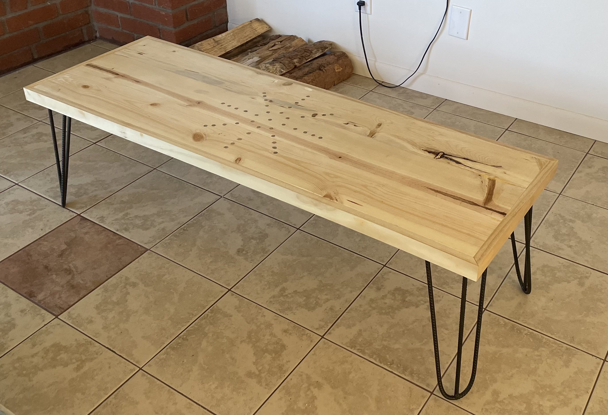
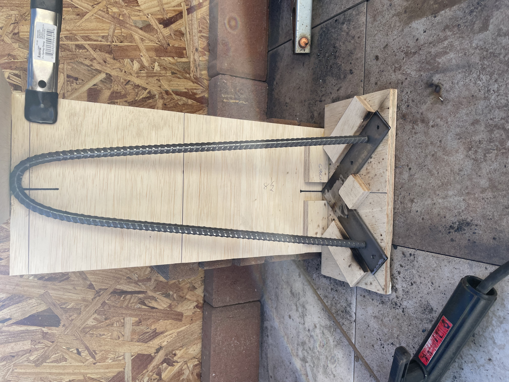
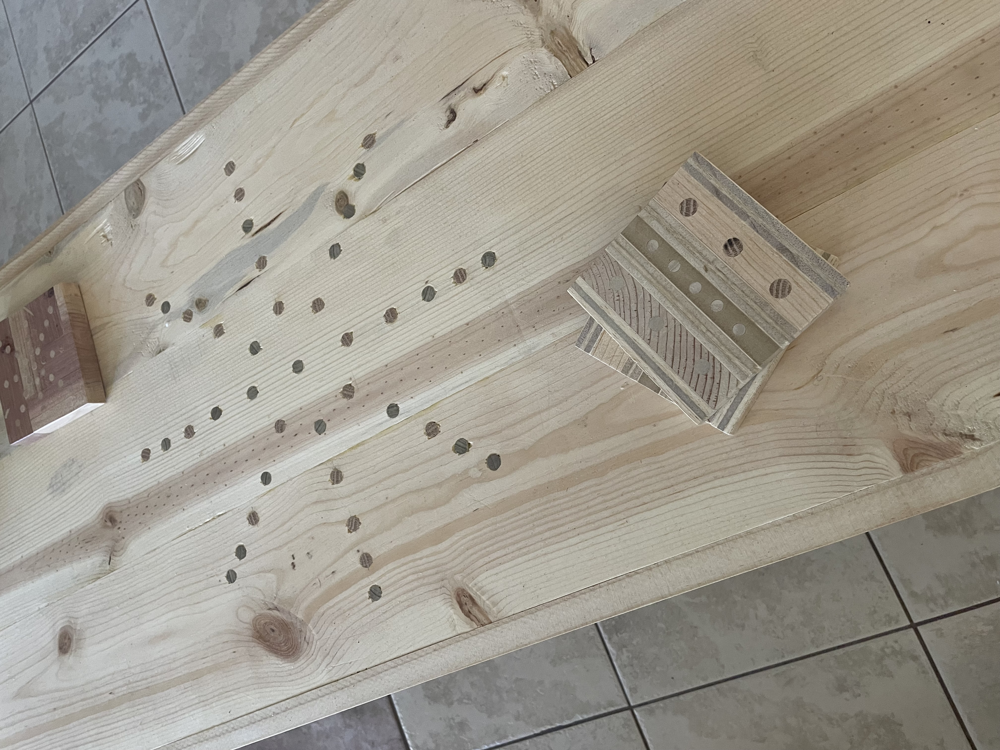
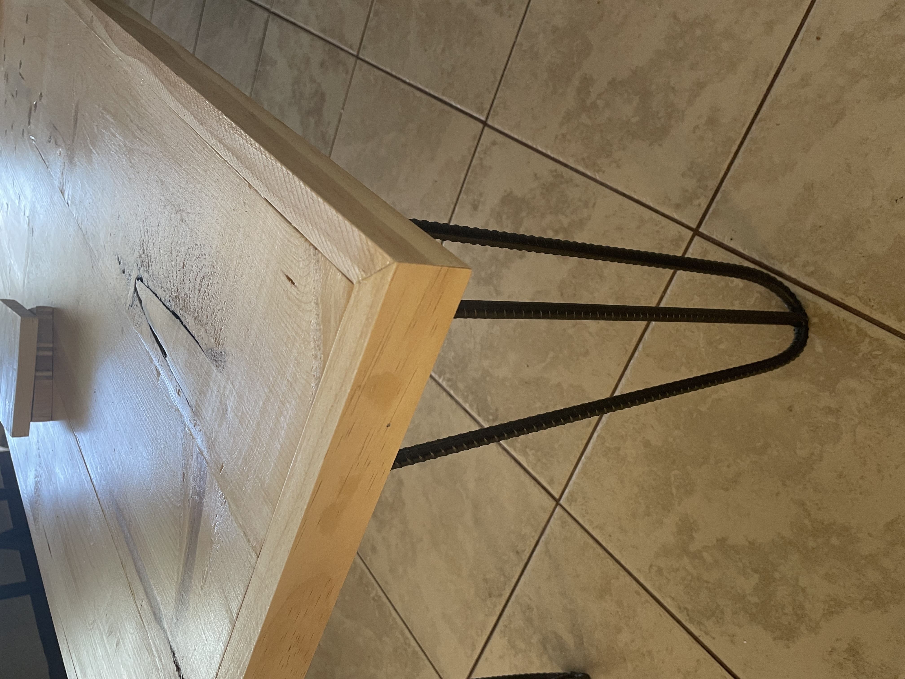

Part way through my kitchen renovation, I needed a break from building cabinets. I had an idea for a coffee table and some coasters. It was a good way to use up some scrap wood and a chance to do something creative. I also got to fire up my arc welder for the first time in 3 years!


I wish I had documented the build a little better, but I’ll do my best to describe the process. The table top is made of three 8” pine planks. I used a dowelling jig, 1/4” dowels, wood glue and bar clamps to assemble top. Anyone whose worked with pine knows there’s not a strait piece to be found, but I love the look, so I wrestled the warping into submission…well mostly.
I edged the table with pine trim, mitered at the corners.
The star pattern on the top was done with both oak and poplar dowels, just to get some color variation. I laid out the pattern with a compass and a carpenter’s square. I cut them about 1/4” long, glued and tapped them in place, and cut them flush with a Japanese pull saw.



I used 3/8” rebar for the hairpin legs. Using some pipes for leverage, made bending them into shape relatively easy and I built a jig for welding them. That was tricky but they all came out very consistent. The mount plates were made from steel flat stock. I cut and welded them into an “L” shape, and used my drill press to drill out the mounting holes.
Two of the coasters are a composite of pine, mdf and plywood, that I glued together into a cube. I then drilled holes for dowels. Once the glue dried, I used the table saw to slice them down to size and sanded / finished them. The third one was made from a scrap of the spice rack I made. It was gratifying to find something to do with all that scrap material.